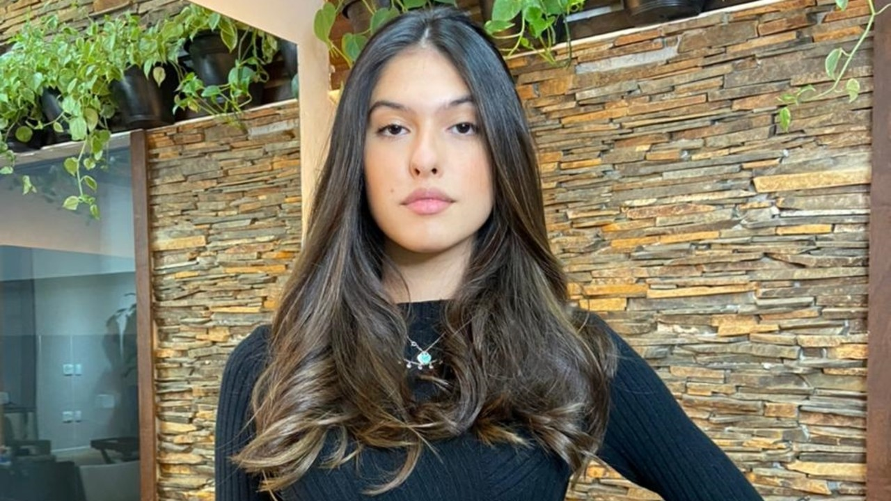

Klara Forkas Gonçalez Castanho (Santo André, 6 de outubro de 2000), é uma atriz, cantora e modelo brasileira.
Klara iniciou sua carreira aos 9 meses como modelo fotográfica para um catálogo de moda. Depois da experiência, começou a gravar comerciais, participando de mais de 60 propagandas.
Klara interpretou no filme Teanira de oliveira, mais conhecida como Tetê, uma adolescente de 16 anos, que não se sente aceita na escola, nem em casa, com consigo mesma. Que foi morar com os avós por conta dos pais desempregados, tendo que recomeçar sua vida mais uma vez.
Fernanda Concon

Foto de Fernanda Concon.
Fernanda Concon Cunha (São Paulo, 15 de julho de 2002) é uma atriz brasileira. Destacou-se na televisão em 2012, ao interpretar a personagem Alícia no remake da telenovela infantil Carrossel, do SBT.
A atriz estreou no cinema em 2021 com o lançamento do filme Confissões de uma Garota Excluída, onde atuou no elenco principal como a Laís Montenegro.
A personagem Laís Montenegro sofria bullyng de Valentina quando pequena, foi diagnosticada com depressão aos 8 anos de idade. Fez plásticas para ficar irreconhecível, e deu a volta no mundo, voltando para se vingar de Valentina.
Júlia Gomes
Foto de Júlia Gomes.
Júlia Melo Gomes (São Paulo, 10 de março de 2002), mais conhecida como Júlia Gomes, é uma atriz, cantora, compositora e influenciadora digital brasileira. Ficou conhecida após participar da segunda temporada do reality show Qual é o Seu Talento? no SBT em 2010.
Em 2020, durante a pandemia, retorna a atuar após quatro anos de pausa, dessa vez no seu primeiro filme, Confissões de Uma Garota Excluída, dando vida a vilã Valentina Castro Silveira. A obra de Thalita Rebouças estreou em 22 de setembro de 2021 na plataforma de streaming Netflix.
Sua personagem foi a vilã do filme, fazendo bullyng com todos que podia, incluindo Tetê, que tinha uma amizade com seu namorado Erick.
Kíria Malheiros
Foto de Kíria Malheiros.
Kíria de Araújo Malheiros (Teresópolis, 29 de julho de 2004) é uma atriz e cantora brasileira.
Em Agosto de 2021 participou do filme Confissões de uma Garota Excluída, estrelando como Samantha Hygino.
Samantha é uma personagem que foi paga pela avó de Tetê para ser amiga dela, dessa forma, começaram uma amizade.
Até Samantha ficar com Erick na festa de Laís, causando uma briga entre elas.
Lucca Picon
Foto de Lucca Picon.
Lucca Picon (Florianópolis, 19 de julho de 2000) é um modelo e ator, que já fez trabalhos na Globo, e na Netflix. é filho do surfista francês Miky Picon com a brasileira Lygia Namem. Interpretando na série Erick.
Erick no filme é namorado de Valentina, mas aparentemente não sente tanto amor por ela. Na festa de Laís, fica com Samantha, oque causa briga entre Valentina, Ercik, Samantha e Tetê, que acaba terminando o filme ao lado de Samantha.
Gabriel Lima
Foto de Gabriel Lima.
Gabriel Lima (Rio de Janeiro, 2 de Março de 2000), sempre muito estudioso vem se especializando em diferentes áreas artísticas, como, canto, fazendo parte de corais, Sapateado e Ballet clássico. Sua dedicação atual é para o teatro musical, estudando técnica e adquirindo experiência na área.
No filme, Gabriel interpreta Davi, um nerd da sala, sem muitos amigos, que acaba tendo uma amizade muito forte e bonita com Tetê.
Davi, Tetê e Zeca era um trio inseparável, até na morte de seu avô, seus amigos estavam presentes.
Marcus Bessa
Foto de Marcus Bessa.
MarcusBessa (Brasil,2 de janeiro de 2000) ator, modelo e cantor brasileiro que ganhou notoriedade ao protagonizar o filme Ela Disse, Ele Disse, interpretando Leo, ao lado de Duda Matte também pela aparição em alguns capítulos de Carinha de Anjo, como Pedro.
No filme, Marcus interpreta Zeca, um garoto que não sabe muito bem sua sexualidade, que não conversa muito com o pai, mas que criou um laço de amizade muito forte com Tetê e Davi.
Caio Cabral
Foto de Caio Cabral.
Caio Cabral (Brasil, 4 de agosto de 1999), além de atuar e crescer na profissão, considera importante usar a visibilidade para debater e combater os mais variados preconceitos.
No filme, interpretou Dudu, um crush secreto de Tetê, irmão de Davi, que por iso faz parte da roda de amigos. Dudu é carinhoso e atencioso com todos a sua volta, valoriza a vida, e que acaba ficando ao lado de Tetê no final do filme.